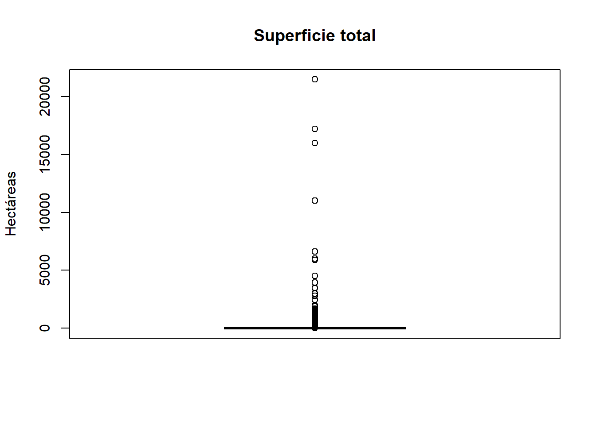
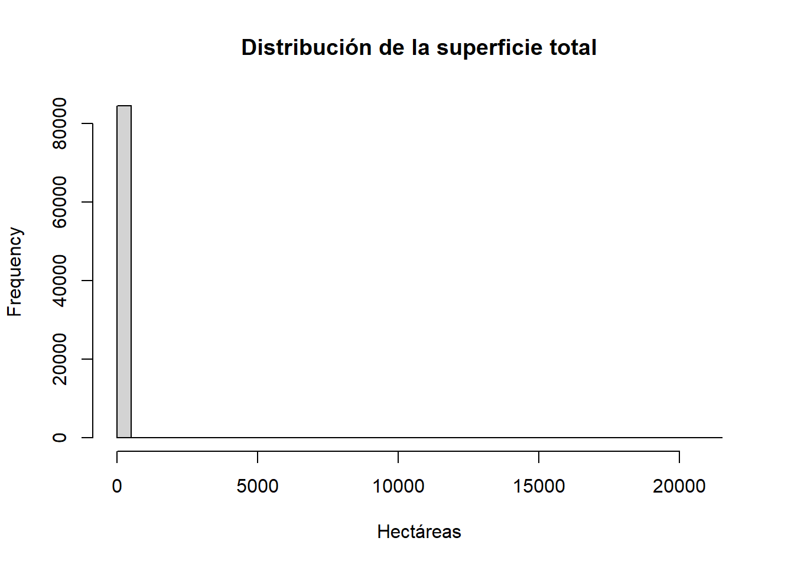
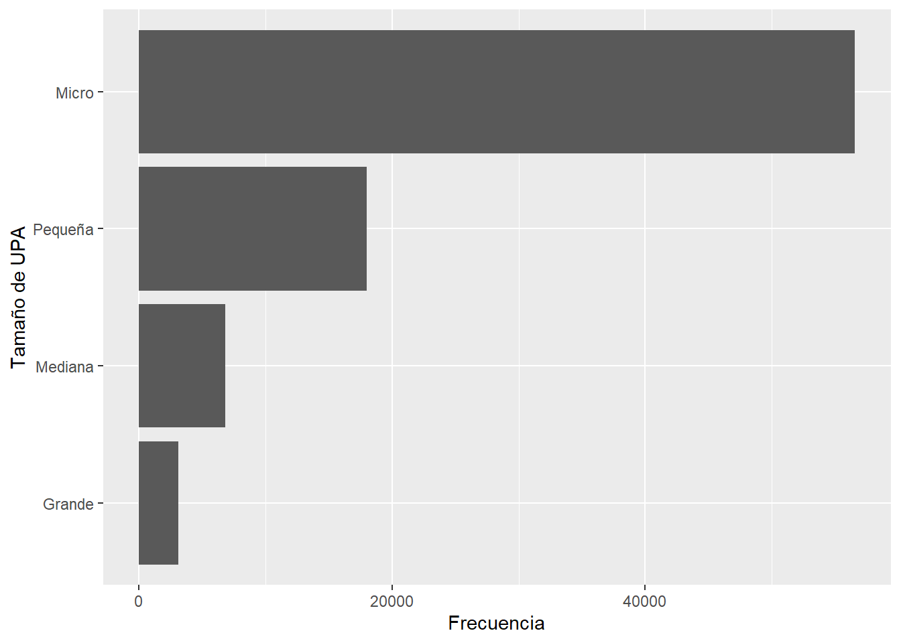

library(dplyr)
library(here)
library(knitr)
library(moments)
base_analitica <- readRDS(
here(
"datos",
"procesado",
"ESPAC_2025",
"sunac_transformado.rds"
)
)17 Estadística descriptiva
Objetivos de aprendizaje
Al finalizar este capítulo, el lector será capaz de:
- Comprender la función de la estadística descriptiva dentro de una investigación.
- Diferenciar variables numéricas y categóricas.
- Calcular medidas de tendencia central.
- Interpretar media, mediana y moda en datos reales.
- Aplicar estadística descriptiva utilizando R y Quarto.
- Elaborar interpretaciones reproducibles a partir de resultados estadísticos.
17.1 Introducción
La estadística descriptiva constituye una de las primeras etapas del análisis de datos. Su propósito es organizar, resumir e interpretar la información disponible antes de avanzar hacia análisis más complejos, como pruebas de hipótesis, modelos econométricos o métodos predictivos.
En investigación aplicada, describir los datos no significa simplemente calcular promedios. Implica comprender la estructura de las variables, identificar patrones generales, reconocer posibles valores atípicos y generar una primera lectura sustantiva del fenómeno estudiado (Tukey, 1977).
La estadística descriptiva permite responder preguntas como:
- ¿Cuántas observaciones contiene la base?
- ¿Qué tipos de variables están disponibles?
- ¿Cuál es el valor promedio de una variable?
- ¿Cuál es el valor típico o central?
- ¿Qué categorías son más frecuentes?
- ¿Existen diferencias importantes entre media y mediana?
En este capítulo trabajaremos con la base analítica construida a partir de la ESPAC 2025.
17.2 Cargando la base de trabajo
Comenzamos cargando los paquetes necesarios y la base transformada en capítulos anteriores.
Para mantener nombres claros en este capítulo, verificamos si la variable de superficie se llama supertotal y, en ese caso, la renombramos como superficie_total.
if (
"supertotal" %in% names(base_analitica) &&
!"superficie_total" %in% names(base_analitica)
) {
base_analitica <- base_analitica |>
rename(
superficie_total = supertotal
)
}17.3 Exploración inicial de la base
Antes de calcular estadísticas descriptivas, revisamos las dimensiones generales de la base.
data.frame(
Registros = nrow(base_analitica),
Variables = ncol(base_analitica)
) |>
kable(
caption = "Dimensiones generales de la base analítica"
)| Registros | Variables |
|---|---|
| 84538 | 10 |
La tabla muestra el número de registros y variables disponibles. Esta verificación inicial permite confirmar que la base fue cargada correctamente y está lista para el análisis.
También podemos revisar la estructura de las variables.
glimpse(base_analitica)Rows: 84,538
Columns: 10
$ Identificador <chr> "01135101000330001", "01135101000330001", "01135101…
$ provincia <fct> AZUAY, AZUAY, AZUAY, AZUAY, AZUAY, AZUAY, AZ…
$ su_tenencia <fct> DUEÑO, DUEÑO, DUEÑO, DUEÑO, DUEÑO, DUEÑO, DUEÑO, DU…
$ tamano_upa <chr> "Pequeña", "Micro", "Mediana", "Micro", "Pequeña", …
$ grupo_tamano <chr> "Pequeños productores", "Pequeños productores", "Me…
$ tiene_bosque <chr> "Sí", "Sí", "No", "No", "No", "Sí", "No", "Sí", "No…
$ tiene_transitorios <chr> "No", "No", "No", "No", "No", "No", "No", "No", "No…
$ pct_bosque <dbl> 100, 100, NA, NA, NA, 100, NA, 100, NA, NA, NA, NA,…
$ superficie_total <dbl> 2.7616, 0.7581, 5.1941, 0.2862, 2.5763, 0.8191, 3.3…
$ fact_exp_fin <dbl> 66.37009, 66.37009, 66.37009, 66.37009, 66.37009, 6…La salida permite identificar variables categóricas, numéricas y derivadas. Esta revisión es importante porque el tipo de variable determina qué estadísticas descriptivas son apropiadas.
17.4 Tipos de variables
En estadística descriptiva es fundamental distinguir entre variables numéricas y categóricas.
Las variables numéricas representan cantidades medibles. Por ejemplo:
superficie_total
pct_bosque
fact_exp_finLas variables categóricas representan grupos o cualidades. Por ejemplo:
provincia
su_tenencia
tamano_upa
tiene_bosqueEsta distinción es importante porque no todas las medidas estadísticas son adecuadas para todas las variables. La media y la desviación estándar son apropiadas para variables numéricas, mientras que las tablas de frecuencia son más adecuadas para variables categóricas (Moore et al., 2017).
17.5 Identificación automática de tipos de variables
Podemos identificar los tipos de variables utilizando R.
data.frame(
variable = names(base_analitica),
tipo = sapply(base_analitica, class)
) |>
kable(
caption = "Tipos de variables en la base analítica"
)| variable | tipo | |
|---|---|---|
| Identificador | Identificador | character |
| provincia | provincia | factor |
| su_tenencia | su_tenencia | factor |
| tamano_upa | tamano_upa | character |
| grupo_tamano | grupo_tamano | character |
| tiene_bosque | tiene_bosque | character |
| tiene_transitorios | tiene_transitorios | character |
| pct_bosque | pct_bosque | numeric |
| superficie_total | superficie_total | numeric |
| fact_exp_fin | fact_exp_fin | numeric |
Esta tabla permite reconocer cómo R interpreta cada variable. Una correcta identificación del tipo de dato evita errores en el análisis posterior.
17.6 Variables numéricas disponibles
Identifiquemos las variables numéricas de la base.
variables_numericas <- base_analitica |>
select(
where(is.numeric)
)
data.frame(
variable = names(variables_numericas)
) |>
kable(
caption = "Variables numéricas disponibles"
)| variable |
|---|
| pct_bosque |
| superficie_total |
| fact_exp_fin |
Estas variables serán utilizadas para calcular medidas de tendencia central, dispersión, posición y forma de la distribución.
17.7 Variables categóricas disponibles
También podemos identificar variables categóricas.
variables_categoricas <- base_analitica |>
select(
where(
function(x) is.character(x) || is.factor(x)
)
)
data.frame(
variable = names(variables_categoricas)
) |>
kable(
caption = "Variables categóricas disponibles"
)| variable |
|---|
| Identificador |
| provincia |
| su_tenencia |
| tamano_upa |
| grupo_tamano |
| tiene_bosque |
| tiene_transitorios |
Las variables categóricas serán analizadas mediante tablas de frecuencia y porcentajes.
17.8 Medidas de tendencia central
Las medidas de tendencia central resumen el comportamiento típico de una variable numérica.
Las más utilizadas son:
- Media.
- Mediana.
- Moda.
Estas medidas permiten construir una primera descripción del fenómeno estudiado (Freedman et al., 2007).
17.9 Media aritmética
La media aritmética se obtiene sumando todos los valores y dividiendo entre el número de observaciones.
data.frame(
media_superficie =
mean(
base_analitica$superficie_total,
na.rm = TRUE
)
) |>
kable(
digits = 2,
caption = "Media de la superficie total"
)| media_superficie |
|---|
| 6.98 |
La media representa el promedio de superficie observado en la base. Sin embargo, cuando existen valores extremos, la media puede verse afectada y dejar de representar adecuadamente el valor típico de la distribución.
17.10 Mediana
La mediana es el valor que divide la distribución en dos partes iguales.
data.frame(
mediana_superficie =
median(
base_analitica$superficie_total,
na.rm = TRUE
)
) |>
kable(
digits = 2,
caption = "Mediana de la superficie total"
)| mediana_superficie |
|---|
| 0.37 |
La mediana es especialmente útil cuando la distribución presenta valores extremos o asimetría. Si la media y la mediana son muy diferentes, esto sugiere que la distribución no es simétrica.
17.11 Comparación entre media y mediana
Podemos presentar ambas medidas en una sola tabla.
data.frame(
medida = c(
"Media",
"Mediana"
),
valor = c(
mean(
base_analitica$superficie_total,
na.rm = TRUE
),
median(
base_analitica$superficie_total,
na.rm = TRUE
)
)
) |>
kable(
digits = 2,
caption = "Comparación entre media y mediana de la superficie total"
)| medida | valor |
|---|---|
| Media | 6.98 |
| Mediana | 0.37 |
Cuando la media es mayor que la mediana, suele existir una distribución sesgada hacia valores altos. Este patrón es frecuente en variables de superficie, ingreso, producción o ventas.
17.12 Moda
La moda representa el valor o categoría que aparece con mayor frecuencia.
En variables categóricas, la moda permite identificar la categoría predominante.
base_analitica |>
count(
tamano_upa
) |>
arrange(
desc(n)
) |>
slice(1) |>
kable(
caption = "Moda de la variable tamaño de UPA"
)| tamano_upa | n |
|---|---|
| Micro | 56572 |
La tabla muestra la categoría más frecuente de tamaño de UPA dentro de la base analítica.
17.13 Función para calcular la moda
Podemos crear una función simple para calcular la moda de una variable.
calcular_moda <- function(x) {
tabla <- table(x)
names(tabla)[which.max(tabla)]
}Aplicamos la función a la variable tamano_upa.
data.frame(
variable = "tamano_upa",
moda = calcular_moda(
base_analitica$tamano_upa
)
) |>
kable(
caption = "Moda calculada mediante función personalizada"
)| variable | moda |
|---|---|
| tamano_upa | Micro |
El resultado permite identificar automáticamente la categoría más frecuente.
17.14 Estadísticas descriptivas básicas
Podemos reunir media, mediana, mínimo y máximo en una tabla resumen.
data.frame(
variable = "superficie_total",
media = mean(
base_analitica$superficie_total,
na.rm = TRUE
),
mediana = median(
base_analitica$superficie_total,
na.rm = TRUE
),
minimo = min(
base_analitica$superficie_total,
na.rm = TRUE
),
maximo = max(
base_analitica$superficie_total,
na.rm = TRUE
)
) |>
kable(
digits = 2,
caption = "Resumen de tendencia central y rango de superficie total"
)| variable | media | mediana | minimo | maximo |
|---|---|---|---|---|
| superficie_total | 6.98 | 0.37 | 0 | 21468.92 |
La tabla resume el comportamiento general de la superficie total. Esta información permite identificar el nivel promedio, el valor central y la amplitud de la variable.
17.15 Interpretación inicial
La estadística descriptiva no debe limitarse a producir tablas. Cada resultado requiere interpretación.
En el caso de la superficie total, la comparación entre media y mediana permite evaluar si existen diferencias importantes entre el promedio y el valor central. Cuando la media supera ampliamente a la mediana, esto suele indicar que existen pocas observaciones con superficies muy altas que elevan el promedio general.
Este tipo de lectura inicial es fundamental antes de construir gráficos, tablas más complejas o modelos estadísticos.
17.16 Medidas de dispersión
Las medidas de tendencia central permiten identificar valores típicos dentro de una distribución. Sin embargo, dos conjuntos de datos pueden tener exactamente la misma media y presentar niveles de variabilidad completamente diferentes.
Por esta razón, la estadística descriptiva también estudia la dispersión de los datos.
Las medidas de dispersión permiten responder preguntas como:
- ¿Qué tan homogéneos son los datos?
- ¿Qué tan alejadas están las observaciones respecto al promedio?
- ¿Existe mucha o poca variabilidad?
Las medidas más utilizadas son:
- Rango.
- Varianza.
- Desviación estándar.
- Coeficiente de variación.
17.17 Rango
El rango representa la diferencia entre el valor máximo y el valor mínimo de una variable.
rango_superficie <-
max(
base_analitica$superficie_total,
na.rm = TRUE
) -
min(
base_analitica$superficie_total,
na.rm = TRUE
)
data.frame(
rango = rango_superficie
) |>
kable(
digits = 2,
caption = "Rango de la superficie total"
)| rango |
|---|
| 21468.92 |
El rango proporciona una primera aproximación a la amplitud de la distribución.
Sin embargo, esta medida utiliza únicamente dos observaciones y puede verse fuertemente afectada por valores extremos.
17.18 Varianza
La varianza mide la dispersión promedio de los datos respecto a la media.
Cuanto mayor sea la varianza, mayor será la heterogeneidad de la información.
data.frame(
varianza =
var(
base_analitica$superficie_total,
na.rm = TRUE
)
) |>
kable(
digits = 2,
caption = "Varianza de la superficie total"
)| varianza |
|---|
| 17826.45 |
La principal limitación de la varianza es que sus unidades se encuentran elevadas al cuadrado, dificultando su interpretación directa.
17.19 Desviación estándar
La desviación estándar corrige esta limitación al expresar la dispersión en las mismas unidades originales de la variable.
data.frame(
desviacion_estandar =
sd(
base_analitica$superficie_total,
na.rm = TRUE
)
) |>
kable(
digits = 2,
caption = "Desviación estándar de la superficie total"
)| desviacion_estandar |
|---|
| 133.52 |
La desviación estándar es una de las medidas de dispersión más utilizadas en investigación aplicada (Moore et al., 2017).
17.20 Interpretación de la desviación estándar
Podemos comparar simultáneamente la media y la desviación estándar.
data.frame(
medida = c(
"Media",
"Desviación estándar"
),
valor = c(
mean(
base_analitica$superficie_total,
na.rm = TRUE
),
sd(
base_analitica$superficie_total,
na.rm = TRUE
)
)
) |>
kable(
digits = 2,
caption = "Media y desviación estándar de la superficie total"
)| medida | valor |
|---|---|
| Media | 6.98 |
| Desviación estándar | 133.52 |
Si la desviación estándar es elevada respecto a la media, esto sugiere una importante heterogeneidad entre las unidades observadas.
17.21 Coeficiente de variación
El coeficiente de variación permite comparar niveles de dispersión entre variables medidas en diferentes escalas.
Se calcula como:
CV = (Desviación estándar / Media) × 100cv_superficie <-
(
sd(
base_analitica$superficie_total,
na.rm = TRUE
) /
mean(
base_analitica$superficie_total,
na.rm = TRUE
)
) * 100
data.frame(
coeficiente_variacion =
cv_superficie
) |>
kable(
digits = 2,
caption = "Coeficiente de variación de la superficie total"
)| coeficiente_variacion |
|---|
| 1911.81 |
Valores elevados indican una fuerte heterogeneidad entre las observaciones.
17.22 Resumen de medidas de dispersión
data.frame(
Medida = c(
"Rango",
"Varianza",
"Desviación estándar",
"Coeficiente de variación"
),
Valor = c(
rango_superficie,
var(
base_analitica$superficie_total,
na.rm = TRUE
),
sd(
base_analitica$superficie_total,
na.rm = TRUE
),
cv_superficie
)
) |>
kable(
digits = 2,
caption = "Resumen de medidas de dispersión"
)| Medida | Valor |
|---|---|
| Rango | 21468.92 |
| Varianza | 17826.45 |
| Desviación estándar | 133.52 |
| Coeficiente de variación | 1911.81 |
Esta tabla resume los principales indicadores de variabilidad de la superficie total.
17.23 Medidas de posición
Las medidas de posición permiten conocer cómo se distribuyen los datos dentro de una variable.
Las más utilizadas son:
- Cuartiles.
- Deciles.
- Percentiles.
Estas medidas permiten dividir una distribución en grupos ordenados (Freedman et al., 2007).
17.24 Cuartiles
Los cuartiles dividen la distribución en cuatro partes iguales.
cuartiles <-
quantile(
base_analitica$superficie_total,
probs = c(
0.25,
0.50,
0.75
),
na.rm = TRUE
)
data.frame(
Cuartil = names(cuartiles),
Valor = as.numeric(cuartiles)
) |>
kable(
digits = 2,
caption = "Cuartiles de la superficie total"
)| Cuartil | Valor |
|---|---|
| 25% | 0.08 |
| 50% | 0.37 |
| 75% | 1.65 |
Interpretación:
- Q1: 25% de las observaciones se encuentran por debajo de este valor.
- Q2: corresponde a la mediana.
- Q3: 75% de las observaciones se encuentran por debajo de este valor.
17.25 Percentiles
También podemos calcular percentiles específicos.
percentiles <-
quantile(
base_analitica$superficie_total,
probs = c(
0.10,
0.25,
0.50,
0.75,
0.90
),
na.rm = TRUE
)
data.frame(
Percentil = names(percentiles),
Valor = as.numeric(percentiles)
) |>
kable(
digits = 2,
caption = "Percentiles seleccionados de la superficie total"
)| Percentil | Valor |
|---|---|
| 10% | 0.02 |
| 25% | 0.08 |
| 50% | 0.37 |
| 75% | 1.65 |
| 90% | 6.06 |
Los percentiles permiten estudiar con mayor detalle la distribución de una variable.
17.26 Visualización mediante diagrama de caja
Los diagramas de caja constituyen una herramienta fundamental para visualizar medidas de posición y dispersión.
boxplot(
base_analitica$superficie_total,
main = "Superficie total",
ylab = "Hectáreas"
)
La figura muestra:
- Cuartiles.
- Mediana.
- Valores extremos.
- Posibles observaciones atípicas.
17.27 Forma de la distribución
Además de conocer el centro y la dispersión de los datos, resulta importante comprender la forma de la distribución.
Dos conceptos fundamentales son:
- Asimetría.
- Curtosis.
Estas medidas ayudan a evaluar qué tan cercana se encuentra una distribución respecto a la normalidad (Weisberg, 2005).
17.28 Asimetría
La asimetría mide el grado de simetría de una distribución.
Para calcularla utilizaremos el paquete moments.
install.packages("moments")data.frame(
asimetria =
skewness(
base_analitica$superficie_total,
na.rm = TRUE
)
) |>
kable(
digits = 3,
caption = "Coeficiente de asimetría"
)| asimetria |
|---|
| 108.069 |
Interpretación:
- Valor cercano a 0: distribución simétrica.
- Valor positivo: cola hacia la derecha.
- Valor negativo: cola hacia la izquierda.
17.29 Curtosis
La curtosis mide el grado de concentración de observaciones alrededor de la media.
data.frame(
curtosis =
kurtosis(
base_analitica$superficie_total,
na.rm = TRUE
)
) |>
kable(
digits = 3,
caption = "Coeficiente de curtosis"
)| curtosis |
|---|
| 14401.88 |
Valores elevados suelen indicar la presencia de observaciones extremas.
17.30 Histograma de la superficie total
Podemos visualizar simultáneamente la forma de la distribución.
hist(
base_analitica$superficie_total,
breaks = 40,
main = "Distribución de la superficie total",
xlab = "Hectáreas"
)
La figura permite interpretar visualmente:
- Simetría.
- Concentración.
- Valores extremos.
- Forma general de la distribución.
17.31 Interpretación general
Hasta este punto hemos aprendido a describir una variable numérica utilizando:
- Medidas de tendencia central.
- Medidas de dispersión.
- Medidas de posición.
- Medidas de forma.
Estas herramientas constituyen la base de cualquier análisis estadístico y permiten comprender adecuadamente los datos antes de construir modelos más complejos (Tukey, 1977).
17.32 Tablas de frecuencia
Hasta este punto hemos trabajado principalmente con variables numéricas. Sin embargo, una gran parte de la información utilizada en investigación corresponde a variables categóricas.
Las tablas de frecuencia constituyen la herramienta básica para describir este tipo de variables (Moore et al., 2017).
Permiten responder preguntas como:
- ¿Cuál es la categoría más frecuente?
- ¿Qué porcentaje representa cada grupo?
- ¿Cómo se distribuyen las observaciones?
17.33 Frecuencia absoluta
Comenzaremos analizando la variable:
tamano_upabase_analitica |>
count(
tamano_upa
) |>
arrange(
desc(n)
) |>
kable(
caption = "Frecuencia absoluta del tamaño de UPA"
)| tamano_upa | n |
|---|---|
| Micro | 56572 |
| Pequeña | 18014 |
| Mediana | 6846 |
| Grande | 3106 |
La tabla muestra la cantidad de observaciones pertenecientes a cada categoría.
17.34 Frecuencia relativa
Las frecuencias absolutas son útiles, pero generalmente resulta más informativo trabajar con porcentajes.
base_analitica |>
count(
tamano_upa
) |>
mutate(
porcentaje =
round(
n / sum(n) * 100,
2
)
) |>
arrange(
desc(n)
) |>
kable(
caption = "Frecuencia relativa del tamaño de UPA"
)| tamano_upa | n | porcentaje |
|---|---|---|
| Micro | 56572 | 66.92 |
| Pequeña | 18014 | 21.31 |
| Mediana | 6846 | 8.10 |
| Grande | 3106 | 3.67 |
Los porcentajes facilitan la comparación entre categorías.
17.35 Distribución de la tenencia de la tierra
Ahora analizaremos una variable de gran importancia para los estudios agrarios.
base_analitica |>
count(
su_tenencia
) |>
mutate(
porcentaje =
round(
n / sum(n) * 100,
2
)
) |>
arrange(
desc(n)
) |>
kable(
caption = "Distribución de la forma de tenencia"
)| su_tenencia | n | porcentaje |
|---|---|---|
| DUEÑO | 71391 | 84.45 |
| HERENCIA | 5695 | 6.74 |
| ARRENDATARIO | 2815 | 3.33 |
| USUFRUCTO | 1150 | 1.36 |
| COMUNERO | 1038 | 1.23 |
| OTRO | 1020 | 1.21 |
| APARCERÍA O AL PARTIR | 789 | 0.93 |
| LITIGIO | 286 | 0.34 |
| POSECIÓN | 222 | 0.26 |
| INVASIÓN | 132 | 0.16 |
Esta tabla permite identificar cuáles son las modalidades predominantes de tenencia de la tierra dentro de la población estudiada.
17.36 Visualización de frecuencias
Los gráficos de barras constituyen la representación visual más utilizada para variables categóricas.
library(ggplot2)
base_analitica |>
count(
tamano_upa
) |>
ggplot(
aes(
x = reorder(
tamano_upa,
n
),
y = n
)
) +
geom_col() +
coord_flip() +
labs(
x = "Tamaño de UPA",
y = "Frecuencia"
)
La figura facilita la comparación visual entre categorías.
17.37 Tablas de contingencia
Las tablas de contingencia permiten analizar simultáneamente dos variables categóricas.
Por ejemplo:
tamano_upa
y
tiene_bosquetable(
base_analitica$tamano_upa,
base_analitica$tiene_bosque
) |>
kable(
caption = "Tabla de contingencia entre tamaño de UPA y presencia de bosque"
)| No | Sí | |
|---|---|---|
| Grande | 1835 | 1271 |
| Mediana | 4429 | 2417 |
| Micro | 51988 | 4584 |
| Pequeña | 14072 | 3942 |
Este tipo de análisis constituye el punto de partida para estudiar asociaciones entre variables categóricas.
17.38 Estadística descriptiva ponderada
Las encuestas oficiales generalmente utilizan diseños muestrales complejos.
Por esta razón, cada observación representa un número diferente de unidades dentro de la población.
La ESPAC incorpora el factor de expansión:
fact_exp_finEsta variable permite obtener estimaciones representativas de la población nacional.
17.39 ¿Por qué utilizar factores de expansión?
Supongamos que deseamos estimar el número total de unidades productivas.
Sin ponderación:
data.frame(
observaciones =
nrow(base_analitica)
) |>
kable(
caption = "Número de observaciones de la muestra"
)| observaciones |
|---|
| 84538 |
Con ponderación:
data.frame(
estimacion_poblacional =
sum(
base_analitica$fact_exp_fin,
na.rm = TRUE
)
) |>
kable(
digits = 0,
caption = "Estimación poblacional utilizando factores de expansión"
)| estimacion_poblacional |
|---|
| 5372426 |
Observe que los resultados son completamente distintos.
La muestra contiene observaciones reales, mientras que la suma de factores de expansión aproxima el tamaño de la población representada.
17.40 Media ponderada
También podemos calcular medias ponderadas.
Por ejemplo, para la superficie total.
media_ponderada <-
weighted.mean(
base_analitica$superficie_total,
w =
base_analitica$fact_exp_fin,
na.rm = TRUE
)
data.frame(
media_ponderada =
media_ponderada
) |>
kable(
digits = 2,
caption = "Media ponderada de la superficie total"
)| media_ponderada |
|---|
| 2.24 |
La media ponderada incorpora el diseño de la encuesta y suele proporcionar estimaciones más representativas de la realidad nacional.
17.41 Comparación entre media simple y media ponderada
data.frame(
Medida = c(
"Media simple",
"Media ponderada"
),
Valor = c(
mean(
base_analitica$superficie_total,
na.rm = TRUE
),
weighted.mean(
base_analitica$superficie_total,
w =
base_analitica$fact_exp_fin,
na.rm = TRUE
)
)
) |>
kable(
digits = 2,
caption = "Comparación entre media simple y ponderada"
)| Medida | Valor |
|---|---|
| Media simple | 6.98 |
| Media ponderada | 2.24 |
Las diferencias observadas reflejan el efecto del diseño muestral sobre las estimaciones.
17.42 Tabla descriptiva reproducible
Una práctica frecuente consiste en generar tablas resumen para informes y artículos científicos.
data.frame(
Variable = "Superficie total",
Media = mean(
base_analitica$superficie_total,
na.rm = TRUE
),
Mediana = median(
base_analitica$superficie_total,
na.rm = TRUE
),
Desv_Est = sd(
base_analitica$superficie_total,
na.rm = TRUE
),
Minimo = min(
base_analitica$superficie_total,
na.rm = TRUE
),
Maximo = max(
base_analitica$superficie_total,
na.rm = TRUE
)
) |>
kable(
digits = 2,
caption = "Resumen descriptivo de la superficie total"
)| Variable | Media | Mediana | Desv_Est | Minimo | Maximo |
|---|---|---|---|---|---|
| Superficie total | 6.98 | 0.37 | 133.52 | 0 | 21468.92 |
Esta tabla resume las principales características estadísticas de una variable.
17.43 Interpretación integrada
La estadística descriptiva permite transformar grandes volúmenes de datos en información comprensible.
En este capítulo observamos cómo:
- La media resume el comportamiento promedio.
- La mediana identifica el valor central.
- La desviación estándar mide la dispersión.
- Los cuartiles describen la posición relativa.
- La asimetría y curtosis caracterizan la forma de la distribución.
- Las tablas de frecuencia resumen variables categóricas.
- Los factores de expansión permiten producir estimaciones poblacionales.
Estas herramientas constituyen la base de prácticamente todos los análisis estadísticos posteriores (Tukey, 1977).
17.44 Manos a la obra
Utilizando la base base_analitica:
- Calcule la media, mediana y desviación estándar de
pct_bosque. - Construya una tabla de frecuencias para
provincia. - Genere un histograma para
pct_bosque. - Calcule los cuartiles de
fact_exp_fin. - Obtenga una media ponderada de
pct_bosque. - Construya una tabla descriptiva para
superficie_total. - Interprete los resultados obtenidos.
- Elabore un breve reporte descriptivo utilizando Quarto.
17.45 Resumen del capítulo
La estadística descriptiva constituye la primera etapa del análisis cuantitativo y permite comprender la estructura general de los datos antes de aplicar técnicas más avanzadas.
Durante este capítulo aprendimos a calcular medidas de tendencia central, dispersión, posición y forma de la distribución. También construimos tablas de frecuencia, analizamos variables categóricas y utilizamos factores de expansión para producir estimaciones representativas de la población.
Estas herramientas proporcionan la base necesaria para explorar datos, generar evidencia y preparar información para análisis inferenciales y econométricos.
En el siguiente capítulo profundizaremos en la construcción de tablas descriptivas reproducibles para informes, tesis, artículos científicos y reportes técnicos.